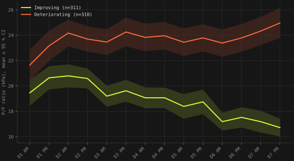
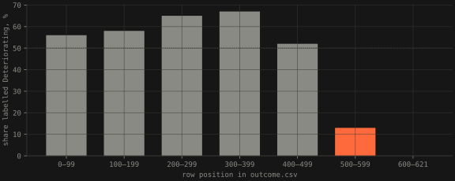
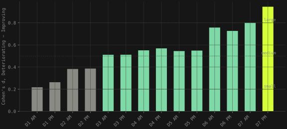

Intensive care · 622 patients · seven days · coursework, Analysis & Modelling of Complex Data, summer 2026
The label says deteriorating. The patient is getting better.
Fourteen readings of the P/F ratio per patient, one outcome label, an assignment to predict the label. The first thing the data said was that the labels point the wrong way. The second was that none of three classifiers beats the others. Both are findings, and the report says so.
- patients · readings
- 622 · 14 twice a day, seven days · 311 vs 311
- Cohen's d, admission → day 7 evening
- 0.22 → 0.95 4.3× · all fourteen significant after BH
- variables agreeing the labels are reversed
- 9 of 10 the tenth is mis-scaled
- best classifier
- none 0.70–0.74 nested CV · p ≥ 0.22 for every pair
The assignment recreates a COVID-19 study in which physiological measurements from emergency care predict a patient's outcome. Mine was the P/F ratio, PaO2/FiO2 in kPa, the standard measure of oxygenation and the number used to grade acute respiratory distress1. 622 patients, fourteen readings each, one label, exactly balanced: 311 Improving, 311 Deteriorating. No identifiers, so the only thing linking a row of readings to its label is position, and the first assertion in the notebook is that the two files line up. No missing values at all, which in clinical records is implausible, and the reason turned up later.
The labels point the wrong way
A higher P/F ratio means better oxygenation; a falling one is what deterioration in respiratory distress looks like. In this dataset the group labelled Deteriorating has the higher ratio, 23.8 against 18.9 kPa, and the rising trend, +0.11 against −0.29 kPa per half-day. Level and direction both point the wrong way1.
That could be a peculiarity of one variable, so I ran the other nine feature files against the same label file. Against identical labels the Deteriorating group has lower CRP, lower lactate, lower peak pressure, lower PaCO2, higher oxygen saturation, higher pH, higher bicarbonate and higher platelets: nine of ten level differences significant at p < 0.001, all describing the "deteriorating" patients as the healthier and recovering ones. The tenth, ventilatory ratio, differs on nothing and sits around 1 300 for a quantity that should be near 1–3, so that file is mis-scaled. The nine are not one measurement counted nine times: their per-patient means correlate at 0.21 on average, and the eigenvalues of that matrix imply about eight independent tests. What they share is the cohort, so this is one finding observed nine ways, not nine replications1.

Misaligned, or mislabelled?
The competing explanation is that the label file is shifted against the readings. A random shuffle is out, because it would destroy the signal rather than reverse it. A structured shift is not, so I tested the row order itself. It is strongly non-random: a Wald–Wolfowitz runs test on the label column gives 241 runs against an expected 312 ± 12.5, z = −5.66. But the structure is not spread through the file. The first 500 rows are in perfectly random order (z = −0.44); what the global test sees is one changepoint near row 500, after which the Deteriorating share drops from 59.6 % to 10.7 %1.

Then the direct test. If the files were offset, realigning them should strengthen the association. Scanning offsets from −30 to +30 and testing the group difference at each, the association is strongest at exactly zero (t = +8.84), the nearest competitor is less than half as strong, and no offset in the range produces a significant association in the clinically expected direction. Realigning never restores the expected sign. Misalignment is ruled out; mislabelling stands, and the odd row order is a second, separate defect that affects nothing downstream because the split is stratified and shuffled1. Every clinical sentence in the report carries the caveat that the class called Deteriorating behaves like a recovering patient.
Cleaning: who gets deleted matters more than accuracy
One record fails integrity: patient 84 holds 22.166667 at all fourteen timepoints. Fourteen measurements over seven days do not agree to six decimals, and 22.166667 is 66.5/3, which is what a single value carried forward looks like. Removed; it is also the proof that imputation happened upstream. Then Tukey's rule, column by column, flags 128 patients, a fifth of the cohort. The variable is right-skewed at every timepoint (mean absolute skew 1.75), Tukey assumes symmetry, and on skewed data the upper fence just cuts through a smoothly decaying tail. On the log scale skew drops to 0.241.
| strategy | removed | n left | Impr. / Deter. | accuracy |
|---|---|---|---|---|
| keep everything | 0 | 621 | 311 / 310 | 0.726 |
| drop, IQR k = 1.5, raw | 128 | 493 | 268 / 225 | 0.718 |
| drop, IQR k = 3.0, raw | 40 | 581 | 296 / 285 | 0.733 |
| drop, IQR k = 1.5, log | 57 | 564 | 291 / 273 | 0.736 |
| winsorise, IQR k = 1.5, log | 0 | 621 | 311 / 310 | 0.723 |
Accuracy spans 0.018 across the five, against a fold-to-fold standard deviation of about 0.04, so it cannot decide anything. What decides it is who gets deleted: the naive rule removes 85 Deteriorating patients against 43 Improving, because that is the higher-valued class and Tukey only has an upper fence to trip. It would turn a balanced dataset into 268/225 while deleting exactly the readings that carry the signal. So the primary dataset winsorises at the log-scale fences instead: 97 readings out of 8 694, 1.12 %, capped across 57 patients, nobody deleted, balance intact. The leakage from fitting fences on the whole set was measured rather than worried about: refitting them inside each fold moves SVC accuracy from 0.7681 to 0.76791.
What grows over the week is the distance
Neither group has a dramatic course: Improving drifts from 20.0 to 16.9 kPa, Deteriorating from 22.4 to 24.6. What grows is the gap between them. All fourteen timepoints separate the groups after Benjamini–Hochberg correction, which at n = 621 is nearly unavoidable, so the effect size is the informative number: Cohen's d rises almost monotonically from 0.22 on the first morning, below the threshold for a small effect, to 0.95 on the seventh evening, a large one. A single admission reading carries almost nothing; a week of them carries a great deal1.

Adjacent timepoints correlate at r = 0.71, decaying to 0.38 across the week: the fourteen columns are one smooth trajectory, not fourteen measurements. That predicts two things, both tested. Regularisation matters for logistic regression (at C = 10 the coefficients of adjacent timepoints oscillate between −0.33 and +0.20; at C = 0.01 they settle into a profile rising towards day seven). And hand-built summary features should add nothing: adding mean, SD, slope, change and the two day averages moves nested accuracy by +0.014, −0.007 and +0.001. No gain1.
None of the three wins
Logistic regression, an RBF support vector classifier and a random forest, one shared stratified 80/20 split, scaling inside the pipeline, grids of 7, 20 and 20 candidates. On the held-out 125 patients the forest scores 0.792, the SVC 0.776, logistic regression 0.736, against a 0.504 baseline. That is the obvious reading and it does not survive.
| classifier | test, default | test, tuned | grid CV (biased) | nested CV | ROC AUC |
|---|---|---|---|---|---|
| logistic regression, C = 0.01 | 0.728 | 0.736 | 0.698 ± 0.032 | 0.700 ± 0.031 | 0.809 |
| SVC (RBF), C = 10, γ = 0.5 | 0.760 | 0.776 | 0.762 ± 0.037 | 0.739 ± 0.052 | 0.806 |
| random forest, depth 10, 300 trees | 0.776 | 0.792 | 0.726 ± 0.041 | 0.725 ± 0.046 | 0.852 |
The three models are scored on the same test set, so their accuracies are paired and McNemar's exact test is the comparison: p = 0.44, 0.14 and 0.83 for the three pairs. The resampled comparison had the same flaw in a subtler form: re-scoring an already-tuned model lets every test fold contain patients that chose its hyperparameters. Nesting the whole grid search inside every outer fold costs the SVC 0.028, the forest 0.009, logistic regression 0.006, and reorders the top two. With the Nadeau–Bengio correction for shared training data, p = 0.26, 0.22 and 0.60. Nothing separates them. All three extract about the same signal, 0.70 to 0.74 against 0.5012.
The SVC's grid spans 0.623 to 0.762, a range of 0.139, which is wider than the gap between the best and worst model: choosing γ badly costs more than choosing the wrong algorithm. Its selected setting sits on an isolated peak of the grid, which is what a search that fits the folds rather than the problem looks like, and is why its selection optimism is the largest. The forest's four most important timepoints are the four with the largest effect sizes, D7 PM, D7 AM, D6 PM, D6 AM, though across all fourteen the rank correlation is ρ = 0.49, p = 0.078: corroboration, not replication.
So which would I deploy? Logistic regression. Repeating everything on the row-deleted dataset moves it by 0.001 where the SVC moves 0.033 and the forest 0.049; its regularised coefficients can be shown to a clinician; its reported number carries the least optimism. Unless the model is used for triage with a tuned threshold, in which case what matters is ranking, and the forest's AUC of 0.852 against 0.809 makes it the better choice. The case is stated with the circumstance that would flip it1.
What this taught me about datasets
Check the direction of the labels before anything else, and check it with every variable you have, not just the one you were assigned. Test the row order. When a cleaning rule deletes a fifth of the cohort, look at who it deletes, because "accuracy did not change" is not the same as "nothing changed". Tune inside the loop or the number is not the number. And when three models are indistinguishable, say so; the useful answer is often the one the leaderboard reading gets wrong.
References
- Šandová, B. (2026): Predicting COVID-19 Treatment Outcomes from Seven Days of P/F Ratio Measurements, semester assignment, Analysis & Modelling of Complex Data — Big Data (Prof. A. Faisal, Dr. C. Auepanwiriyakul), Universität Bayreuth, 30 August 2026. 18 pages, with the notebook's tables, twelve figures and a generative-AI use declaration. Dataset: course-supplied CSVs (ten physiological variables, one outcome file), not public.
- Hastie, T., Tibshirani, R. and Friedman, J. (2009): The Elements of Statistical Learning, 2nd ed., §7.10.2, on applying cross-validation to the entire modelling sequence; Nadeau, C. and Bengio, Y. (2003): Inference for the generalization error, Machine Learning 52, for the corrected resampled t-test.